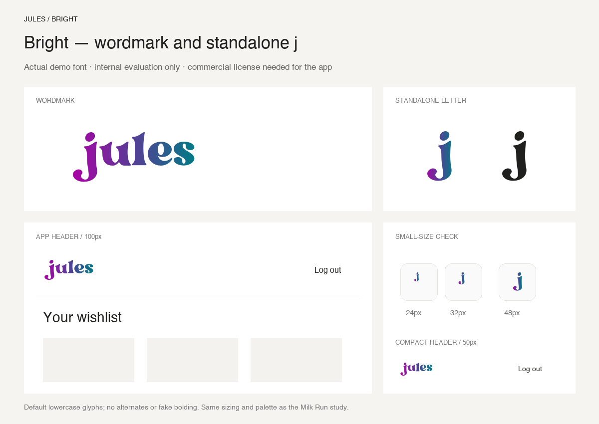
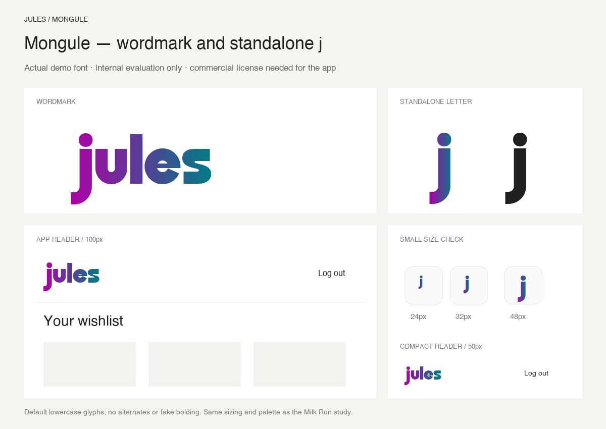
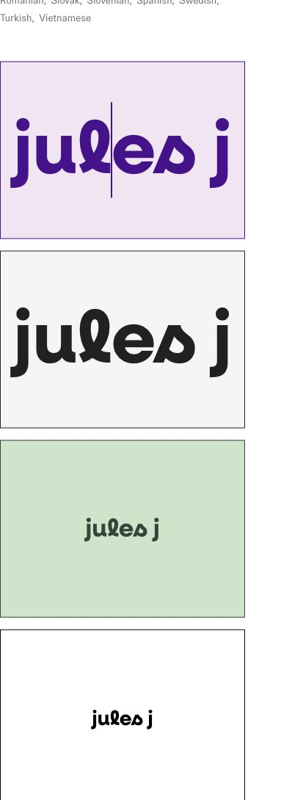

Same always-on gradient and sizes as Milk Run for Bright and Mongule. Neulis Cursive uses the vendor’s public tester, in solid colors.

Personal-use demo. Commercial licensing needed for the live app. Official font and tester.

Personal-use demo. Commercial licensing needed for the live app. Official font.
Actual vendor preview, not a substitute font. The two large panels render at 100px; smaller panels are 34px and 28px. No licensed font file was obtained, so gradient and app-layout mockups are pending.
